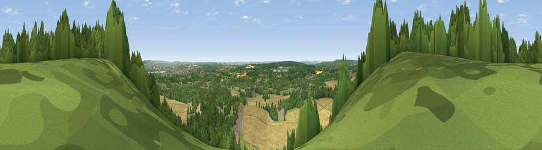

Viewpoint near Vigo Village
#9128 in England · top 2% of its area beats it · near Vigo VillageThe view, rendered

A 360° render of this exact spot computed from the terrain model, tree cover and land cover — summer colours, afternoon light, calibrated against photographs of famous viewpoints. Real trees, hedges and buildings will differ in detail.
The panorama
Grey silhouette: terrain skyline in each direction (720 bearings, Earth curvature and refraction included). Dashed green: skyline with trees (+15 m) and buildings (+8 m) as obstacles. Blue strip: how far the ground is visible on each bearing.
Where the view opens
Wedge length = distance to the farthest visible ground on that bearing (vegetation-aware). Rings at 10, 25 and 50 km.
What fills the view
41% woodland · 29% cropland · 25% grassland · 4% built-up
Angular shares of the visible panorama (visual magnitude), not map area. Landscape diversity 0.53 (0–1 Shannon).
Key numbers
More beautiful places nearby
The staircase of upgrades: each row has a higher view potential than everything closer. Driving times are estimates from straight-line distance, calibrated against real road routing — check an actual route before setting out.
| Place | Direction | Drive | Score |
|---|---|---|---|
| Viewpoint near Vigo Village | E · 1 km | ~2 min | 65.0 |
| Viewpoint near Birling | ENE · 3 km | ~6 min | 65.2 |
| Viewpoint near Wrotham | WSW · 4 km | ~8 min | 66.6 |
| Viewpoint near Shipbourne | SW · 11 km | ~21 min | 69.1 |
| Viewpoint near Westwell | ESE · 36 km | ~54 min | 72.2 |
| Viewpoint near Lympne | ESE · 52 km | ~73 min | 72.6 |
| Viewpoint near Fairlight | SSE · 54 km | ~75 min | 74.7 |
| Viewpoint near Fairlight | SSE · 54 km | ~76 min | 75.1 |
51.32763, 0.36237 · source: screening · position refined by local search. Computed location — check access rights before visiting.